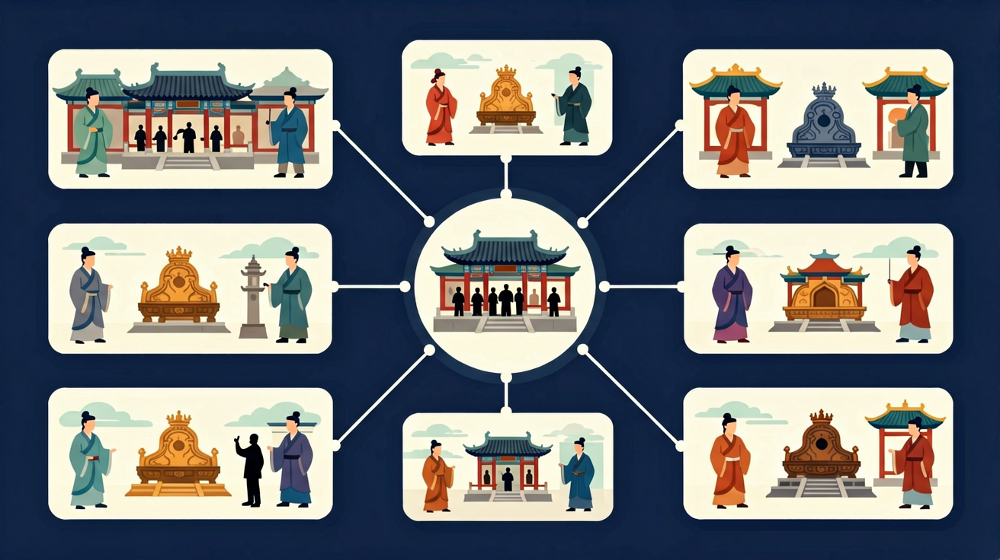

❓ 为什么孔子说'仁者爱人'但古代还有那么多残酷刑罚？
❓ 诸子百家吵来吵去，谁的思想最后真正被统治者用了？
❓ 背了这么多'之乎者也'，古人说话真这样吗？
学完这一课，这些问题你都能自信地回答。
🎯 能说出百家争鸣中儒、道、法三家的核心主张
🎯 能分析董仲舒'天人感应'思想对汉代政治的影响
🎯 能判断科举考试内容与儒家思想的内在联系
'民贵君轻'主张出自哪家？
汉代'察举制'主要考察？
中国古代思想文化是高中历史的重要内容。通过了解甲骨文、青铜铭文及其他文献记载，了解私有制、阶级和早期国家的特征。
通过了解春秋战国时期的经济发展和政治变动，理解战国时期变法运动的必然性；了解老子、孔子学说；通过孟子、荀子、庄子等了解“百家争鸣”的局面及其意义。
And：学生已了解春秋战国时期社会大变革背景
But：为何同一时期会涌现出截然不同的思想流派？
Therefore：理解思想多样性对中华文化基因形成的关键作用
核心是诸子百家针对社会问题提出的不同解决方案。比如墨子主张'兼爱'，用数学思维计算利益：假设每人每天帮助他人1小时，千万人互助产生的效益远超个体单打独斗。这与儒家'爱有差等'形成鲜明对比，展现乱世中思想家们的智慧碰撞。
🌍 就像班级讨论环保方案时，有人主张严格惩罚（法家），有人建议道德倡导（儒家），还有人力推科技解决（墨家），不同思路反映的就是'百家争鸣'的现代缩影。
下列哪项最能体现'百家争鸣'的特点？
先秦诸子奠定思想底色；汉代儒学正统化；魏晋玄学、隋唐三教并行；宋明理学重建伦理秩序；明清之际进步思想家批判专制空疏。文学艺术与科技成就（四大发明等）是中华文化的重要组成，并对外传播。
点击时代/图层按钮切换地图；悬停边界，点击城市标记查看说明。
1. 错误表现：认为甲骨文只是简单的占卜记录。认知根源：学生常将甲骨文简化为"迷信活动产物"，忽略了其作为商朝国家档案的性质。正确理解：殷墟出土的15万片甲骨中，超过5000片记载着商王对农业、战争、祭祀的决策，如"癸卯卜，争贞：旬亡祸？王占曰：有祟"显示这是系统的国家治理行为，与青铜器铭文共同构成"国之大事，在祀与戎"的治理体系。
2. 错误表现：将"井田制"等同于土地私有制。认知根源：受后世土地制度影响产生时代错位。正确理解：西周金文如《大盂鼎》记载"赐汝邦司四伯，人鬲自驭至于庶人六百又五十又九夫"，配合《诗经》"雨我公田，遂及我私"可知，庶民在公田劳作时才能耕种私田，这种劳役地租形式体现的是土地国有制下的等级占有。
3. 错误表现：认为早期国家特征与秦汉郡县制相同。认知根源：用成熟国家形态想象早期国家。正确理解：二里头遗址的宫城面积仅10.8万平方米，相比殷墟36平方千米的"族邑"分布格局，说明夏商时期是"邑制国家"，通过青铜礼器（如二里头青铜爵）和玉璋等物化等级制度，与《尚书·酒诰》"越在外服：侯、甸、男、卫、邦伯"的记载共同构成血缘政治联盟。
复制提示词到 AI 学伴，生成「中国古代思想文化」的时间轴或事件提纲；也可以上传你手绘的示意图，请 AI 学伴点评。
复制后可粘贴到 AI 学伴继续对话。
乱世求治（诸子）、一统求稳（儒术）、内省心性（理学）、批判反思（明清之际）。评价思想要放回具体社会问题，避免贴简单好坏标签。
常见误区：常见误区是把儒学当成从未变化的教条，忽视其历史演变。
汉武帝时期思想领域的重要措施是？
1. 甲骨文识别AI：故宫博物院与华为合作开发的"识骨寻文"系统，通过深度学习识别碎片甲骨。系统已匹配出127组缀合甲骨，如将收藏于国家图书馆的B12925与社科院考古所的HD-2834拼合，证实这是商王武丁时期征伐土方的完整占卜记录，验证了《甲骨文合集》6063片的记载。
2. 青铜器成分分析：上海光源采用同步辐射X射线荧光技术，检测何尊内壁12处铭文区域的铜锡铅比例。数据显示"宅兹中国"四字处含锡量达18.7%，高于器身平均值的15.2%，证实西周工匠已掌握局部合金配比技术来突出重要铭文。
3. 古代DNA研究：吉林大学古DNA实验室对陶寺遗址M3015大墓人骨进行全基因组测序，发现该贵族个体含有约42%的仰韶农业人群血统和58%的草原游牧人群血统，印证《左传》"昔高阳氏有才子八人"反映的部族融合现象。
1. 问题：商周青铜器纹饰从饕餮纹到窃曲纹的演变，能否简单归结为"从恐怖到温和"的审美变化？分析线索：对比殷墟妇好墓青铜器（如偶方彝）与西周中期虢季子白盘的纹饰差异，注意《礼记·表记》"殷人尊神，率民以事神；周人尊礼，尚施"的记载，思考礼器功能从"通神"到"明礼"的转变如何影响纹饰演变。
2. 问题：甲骨文记载的商王世系与《史记·殷本纪》存在7处差异，这是否意味着司马迁记载不可信？分析线索：对照殷墟YH127坑出土的商王世系甲骨与《殷本纪》，注意差异主要出现在先商时期（如报丁、报乙、报丙的次序），结合《竹书纪年》"自盘庚徙殷至纣之灭，更不徙都"的记载，思考口述历史在文字成熟前的传承特点。
先看安阳殷墟H127甲骨窖藏，这个出土17096片甲骨的灰坑，像时间胶囊般封存着商朝的国家记忆。当我们在龟甲上辨认"贞：翌癸卯帝令其风"的刻辞时，实际上触碰的是中国最早的系统文字——这些包含4300多个单字的记录，不仅用于占卜，更是税收（"雀入龟五百"）、军事（"征尸方"）的行政档案。接着观察青铜器上的金文，西周中期的大盂鼎291字铭文记载着"人鬲"赏赐，这种将战俘转化为生产者的制度，与《诗经·七月》"同我妇子，馌彼南亩"的集体劳作场景，共同勾勒出"溥天之下，莫非王土"的国有制经济形态。最后聚焦二里头遗址，这个最早的中国都城，其宫城轴线布局与青铜爵、陶礼器的组合，验证了《礼记·礼运》"大人世及以为礼"的等级制度。从甲骨文的鬼神崇拜到金文的宗法叙事，早期国家通过垄断文字（商代掌握文字者不足人口的0.01%）和青铜技术（需控制铜锡铅矿源），完成了从"神权政治"到"礼乐文明"的转型，这个过程在春秋时期"铸刑鼎"事件中达到顶峰——当郑国子产将法律条文铸在青铜器上公之于众时，文字终于走下神坛，成为维系大一统国家的纽带。
关于甲骨文和金文，正确的是
把卡片拖到核心概念 / 方法技能 / 应用情境 / 常见误区。
拖完 4 项后自动判分。
通过了解甲骨文、青铜铭文及其他文献记载，了解私有制、阶级和早期国家的特征。
分析西周青铜器铭文内容与分封制的关系
先独立作答，再点选项查看对错与错因。
商周时期将重要事件铸在青铜器上的主要目的是
与甲骨文相比，金文最显著的特点是
西周青铜器铭文内容多反映
商周时期刻在龟甲兽骨上的文字叫____，铸在青铜器上的文字叫____。
答案：甲骨文|金文
两种文字载体不同
____时期青铜器铭文开始大量出现，记载分封、赏赐等活动。
答案：西周
西周是金文鼎盛期
（真题）董仲舒改造儒学最关键的是？
（迁移）下列哪项政策体现'中庸'思想？
（综合）黄老思想适用于？
✅ 法家制度+儒家外衣的'阳儒阴法'模式
💡 混淆官方意识形态与实际治理手段
✅ 汉初休养生息是主动的轻徭薄赋政策
💡 未理解道家'无为'的政治设计性
口诀：儒讲仁礼法重刑，道法自然墨兼爱
类比：诸子百家像手机APP：儒家是系统软件，法家是杀毒工具，道家是省电模式
复述本课两个核心概念的定义。
用本课方法分析一个新例子。
有同学认为：认为'罢黜百家'后儒家一统天下 —— 请说明错在哪里。
有同学认为：将'无为而治'等同于不作为 —— 请说明错在哪里。
把还没弄明白的地方写下来问 AI 学伴。它会先帮你找到卡住的地方，再给你一个小小的提示，让你自己往前走一步。